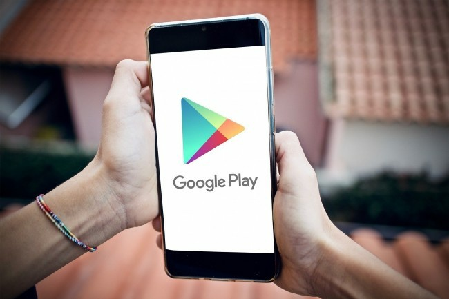

Ce vendredi 1 Juillet 2022, le verdict du bras de fer qui opposait le géant de l'internet Google et ses associés de développeurs américains est tombé.
Entre un procès long, fastidieux et coûteux et régler 90 millions de dollars pour ne pas se mettre à dos les développeurs américains d'applications Android, Google a choisi la deuxième option.
Google est accusée d'abus de pouvoir de distribution d'applications et de facturer des frais injustes de 30% pour les achats d'applications et les achats intégrés effectués via Play Store.
« L'économie des applications Android a contribué à créer près de deux millions d'emplois aux États-Unis. Les développeurs du monde entier ont gagné plus de 120 milliards de dollars en utilisant le Google Play Store ». C’est ainsi que commence le communiqué de Google qui tente de se justifier face au procès qui l’oppose à des développeurs américains. Ces derniers accusent la firme d'abuser de son pouvoir de distribution d'applications et de facturer des frais injustes de 30% pour les achats d'applications et les achats intégrés effectués via le Google Play. En ce sens, elle annonce la création d’un fonds de 90 millions de dollars « pour aider les développeurs américains qui ont réalisé deux millions de dollars ou moins de revenus annuels via sa boutique d'applications au cours de chaque année entre 2016 et 2021 ».
Notons que la grande majorité des développeurs américains qui ont perçu des revenus par le biais de Google Play pourront recevoir de l'argent de ce fonds, s'ils le souhaitent. Si le tribunal approuve ce règlement proposé par le géant américain, les développeurs qui remplissent les conditions requises seront informés et autorisés à recevoir une distribution du fonds. Cette proposition d'accord, « permet aux deux parties d'aller de l'avant et d'éviter des années de litiges incertains et distrayants » selon les mots de Google. Pour rappel, les plaignants ont initialement déposé une plainte contre Google en 2020 en Californie, alléguant que l'entreprise avait obtenu un monopole dans l'espace de distribution d'applications Android « grâce à une série de contrats anticoncurrentiels, des abus stratégiques de sa position dominante dans d'autres applications logicielles Android, des déficits de connaissances et d'informations des consommateurs, et la culture et l’exploitation de la peur des logiciels malveillants chez les utilisateurs d'appareils ».
En plus du fonds, la firme annonce vouloir maintenir un certain nombre de pratiques existantes et mettre en place d’autres avantages pour « aider les développeurs à innover et à communiquer avec leurs utilisateurs ». Ainsi, le taux de commission de 15 % de Google est maintenu pour le premier million de dollars de revenus annuels réalisés sur le Google Play Store pour les développeurs américains, mis en place en 2021. Plus encore, le contrat de distribution pour les développeurs va être révisé afin d'indiquer clairement que ces derniers peuvent continuer à utiliser les coordonnées obtenues dans l'application pour communiquer avec les utilisateurs en dehors de l'application, notamment en ce qui concerne les offres d'abonnement ou les offres à moindre coût sur une boutique d'applications concurrente ou sur le site Web du développeur.
Dans les prochaines versions d'Android, Google maintiendra certains changements mis en œuvre dans Android 12 qui permettent aux utilisateurs d'utiliser encore plus facilement d'autres boutiques d'applications sur leurs appareils, tout en veillant à ne pas compromettre les mesures de sécurité mises en place par Android. Enfin, un onglet spécialement dédié aux développeurs indépendants et les petites startups qui créent des applications uniques de haute qualité, devrait être créé, sous le nom d’« Indie Apps Corner ». Il apparaîtra dans l'onglet Apps de la page d'accueil américaine de Google Play. Toujours dans une volonté d’être plus transparent – et ne pas se retrouver avec un énième procès sur les bras prochainement – Google a accepté de publier des rapports annuels de transparence. Ils contiendront des informations sur la boutique Google Play, notamment des statistiques telles que les applications supprimées de Google Play, les résiliations de comptes et d'autres données relatives à l'interaction des utilisateurs avec Google Play.
Aboubakar BARRO